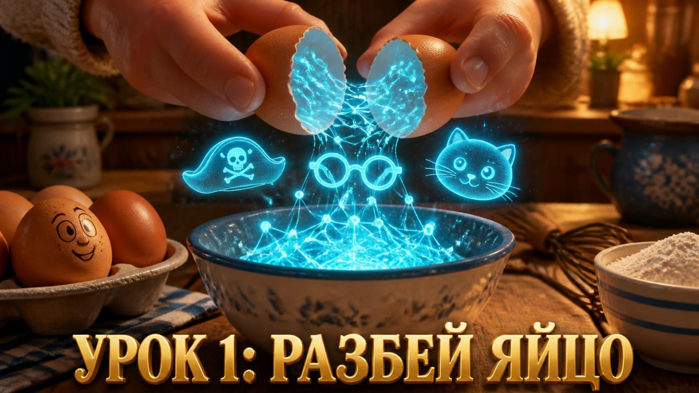
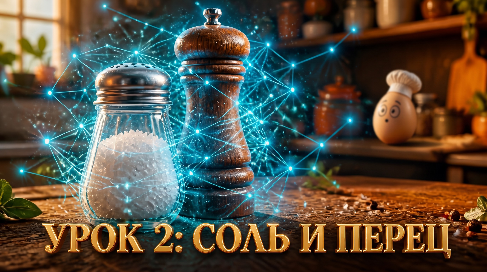
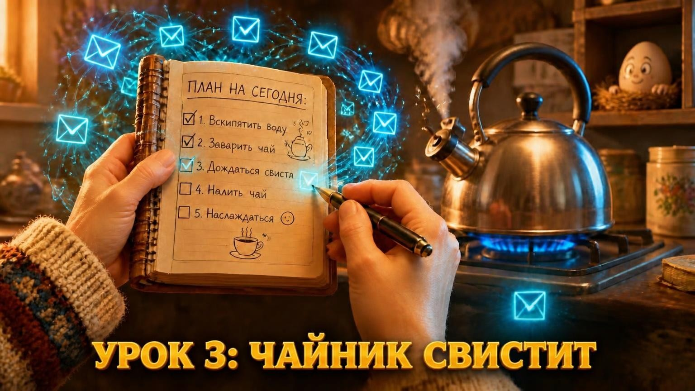
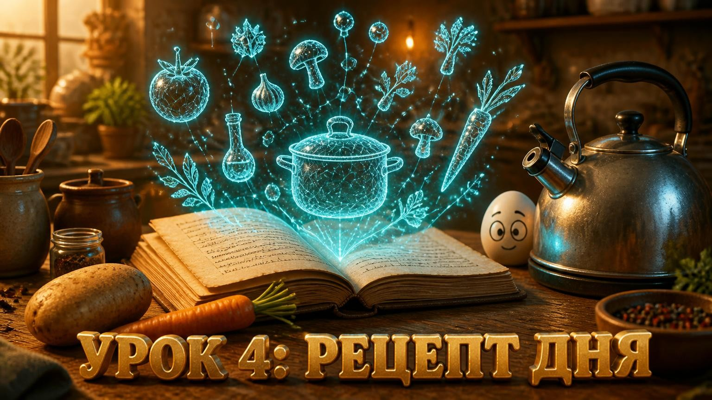
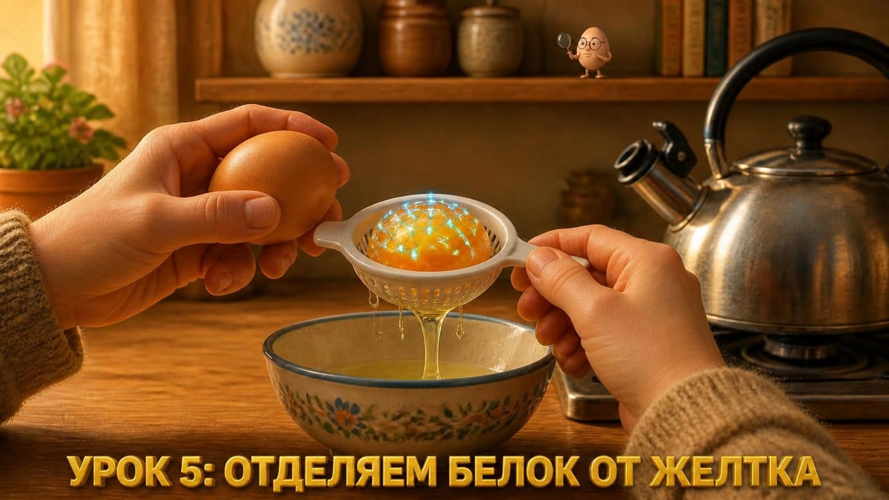
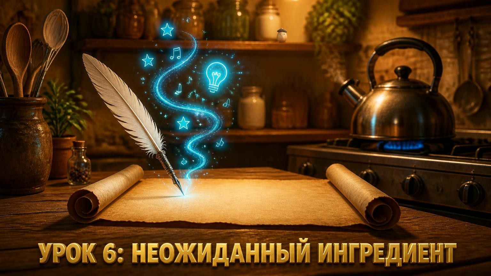
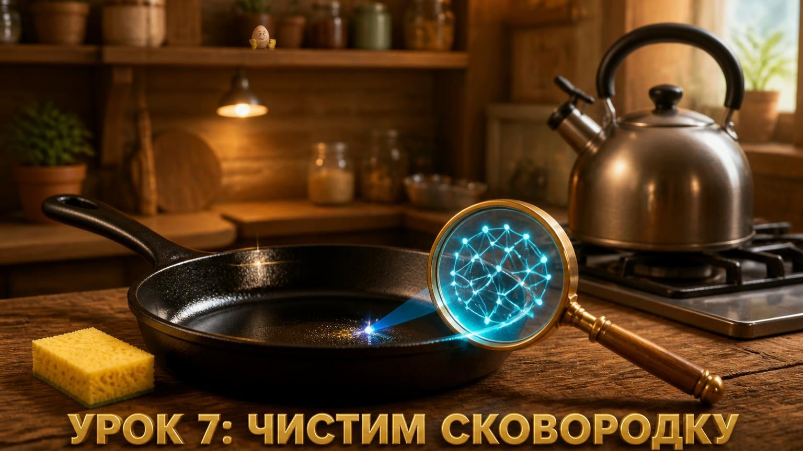
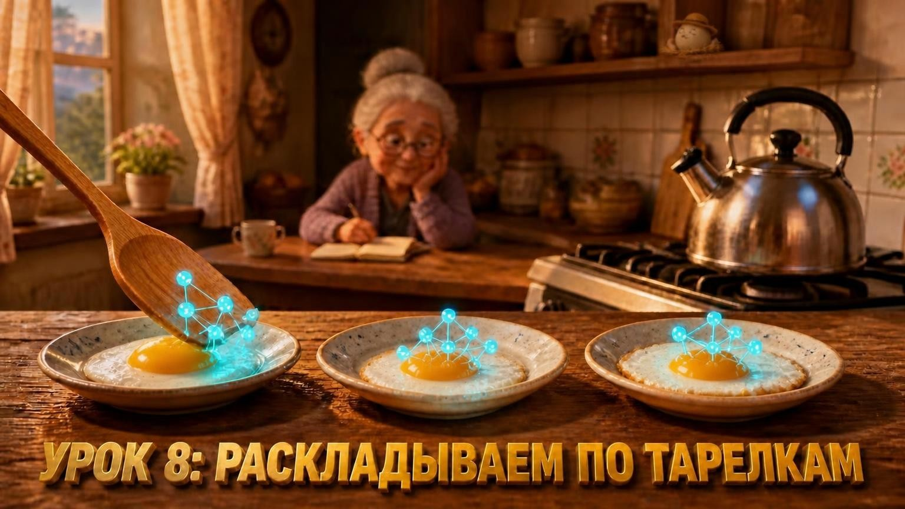
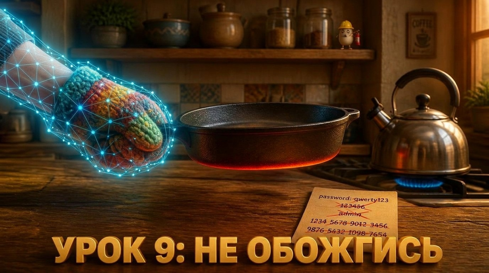

Урок 1
ИИ — это актер
Курс для тех, кто хочет идти в ногу со временем, но боится сложных технологий
Вам 50+, и вы хотите завести себе нового друга и помощника
У вас есть только смартфон (компьютер не обязателен)
Вы боитесь нажать «не туда» и всё сломать
Каждый урок — как простой рецепт: понятно, по шагам и без сложных слов

ИИ — это актер

Уточняем запрос

Персональный помощник

Идеи из ничего

Упрощаем тексты

Пишем сказки и стихи

Выжимка сути

Помощь в хобби

Техника безопасности
Ваш личный ИИ
Никаких команд и сложных кнопок — просто говорите голосом, как по телефону
ИИ-помощник
онлайн
Нужно написать заявление в управляющую компанию о протечке крыши. Помоги составить грамотный текст
ИИ-помощник
Конечно! Вот пример: «Прошу провести ремонт кровли в доме по адресу... в связи с протечками». Можете скопировать и отправить.
Спасибо! А как лучше отправить — через сайт или лично?
ИИ-помощник
Лучше через сайт УК — так быстрее. Помогу найти адрес сайта, если нужно 😉
ИИ сам слушает вас, читает сложные бумаги и пишет ответы. Просто объясните ему, что нужно.
Мы создали этот курс специально для людей, которые не хотят отставать от времени, но не любят сложные инструкции и технический жаргон.
Никакой теории — только практика. Никакого страха — только поддержка. Мы на связи на каждом шагу.
Вместе все у нас получится!
Весь курс — 5 часов. Занятие — 30 минут.